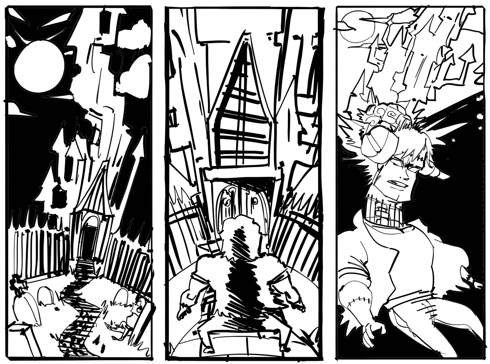
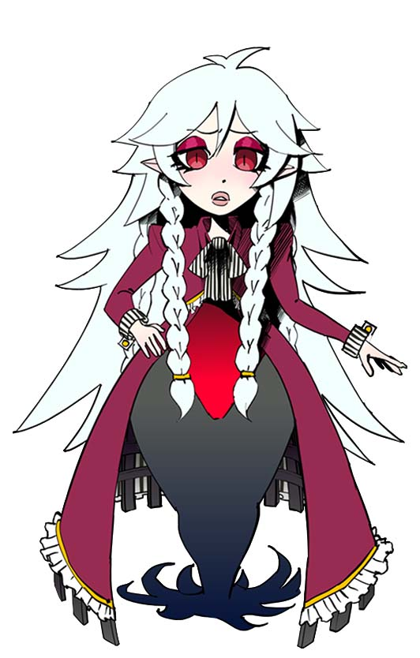
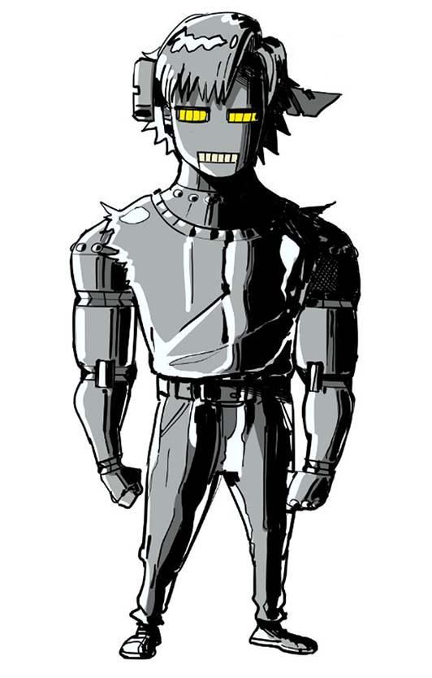
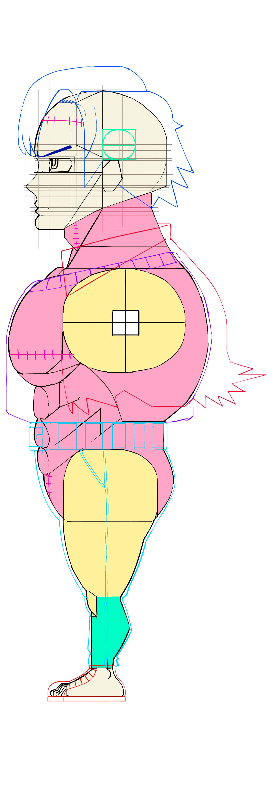
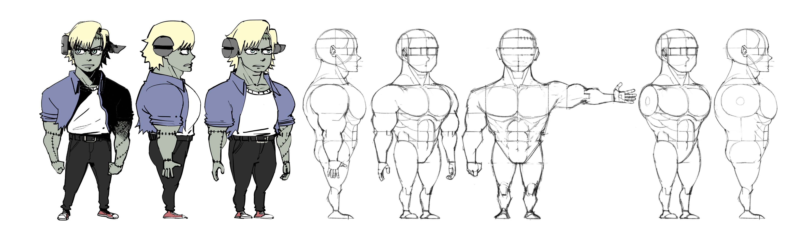

NOT A MONSTER
World Building Concept
World Building Concept
Not a Monster is a concept story about a a character named Victhor Von Frankenstein, which we can call Stein, he lives in a gothic like world fusing a lot of popular ideas from the past and from the present about sci-fi an fantasy storytelling.
In this Gothic but colorful world, Stein suffered an accident and now he has lost his memmory, in order to regain his memories he has to investigate a strange castle in which he will encounter a lot of mysteries
Stein adventure is about having a lot of fun, drama and exagerated things!






Stein is our main protagonist, this is why a lot of the concept art centers around him. He is very dramatic and exagerated, he tries to always look cool and serious but ends up making fun of himself while doing so but he doesn't care about that either, even if he doesn't remember that much about anything his personality is pretty much the same.
In the story we are not suposed to know much about her until the very end, but the plot twist is that she is Stein's wife! Draculinda presents herself as a mysterious character, reserved and acting with class but we have to remember that in this world she is the equivalent to Dracula the king of vampires, so she is basically a force of nature too (yes, Stein got himself a baddie!)
V1, as you can see; is a robot that has a LOT of similarities with Stein, that's because he in fact, has Stein memories (if that makes sense...) Even if he has Stein memories, he develops a personality based on Stein intelligence (which isn't that bright to begin with) this ends up making him more stoic and serious, but also makes him unhinged, his goal is to help Stein recover his lost memory.



